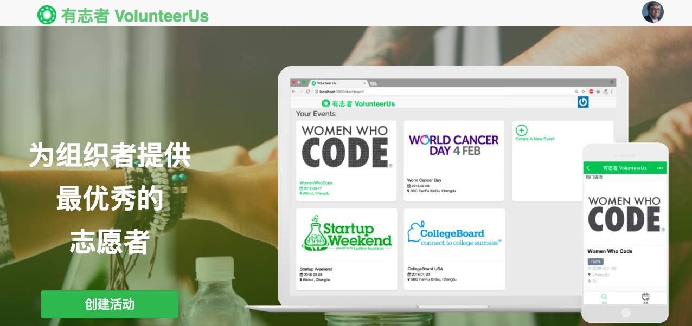

StickerMachine

- ES6
- Ruby
- Rails
- Redis
- Dokku
- Server-Setup
- Project-Mgmt
StickerMachine is a WeChat miniprogram –– a personal project to further evaulate WeChat miniprograms' advantages and disadvantages. The program is a GIF (or "sticker") search engine within WeChat, utilizing the Giphy API. This project gave me even better familiarity with the advantages and hurdles of building a WeChat miniprogram – such as censorship –, and built something fun to boot.
My role on this project was as project manager and backend developer. To try StickerMachine, click here to show the QR code.
My role on this project was as project manager and backend developer. To try StickerMachine, click here to show the QR code.
Journey Into Chengdu
- Tencent Maps
- WXML
- WXSS
- ES6
- Ruby on Rails
- PostGIS
Journey into Chengdu is a map-based WeChat miniprogram , winner of the People's Choice Award at the 2017 "Code For City" Hackathon in Chengdu. This miniprogram turns city exploration into a game, uncovering your city as you traverse it, similar to the "fog of war" feature in video games.
A promo video demonstrating the miniprogram can be seen here.
On this project I compared map APIs and components, selecting and then implementing the most appropriate solution for our use case. The code for the backend can be found here.
A promo video demonstrating the miniprogram can be seen here.
On this project I compared map APIs and components, selecting and then implementing the most appropriate solution for our use case. The code for the backend can be found here.
Le Wagon

- SQL
- ActiveRecord
- Ruby on Rails
- Testing
- Sinatra
Le Wagon is an international code bootcamp. I have been involved with Le Wagon Chengdu in various capacities, recently teaching the database portion of bootcamp and mentoring final week projects, often WeChat miniprograms.
I originally began building WeChat miniprograms here and continue to work on them with the Chengdu and wider coding community in China.
As of October 2018, I am still teaching and mentoring when bootcamp is in session.
I originally began building WeChat miniprograms here and continue to work on them with the Chengdu and wider coding community in China.
As of October 2018, I am still teaching and mentoring when bootcamp is in session.
VolunteerUs

- Ruby on Rails
- SQL
- ActiveRecord
- Testing
- Sinatra
- Custom QR
- SMS notifs.
VolunteerUs is a platform web app + WeChat miniprogram to connect volunteers with events and event organizers. VolunteerUs is the product of a 2-week product sprint and one of the earliest WeChat miniprograms built by a non-Chinese team.
This was the culminating project for Le Wagon Batch #88 in Chengdu. The code for the Rails project can be seen here, and the miniprogram code can be found here.
For this project I managed the db, routing, and built the API with Rails. The project is no longer maintained.
This was the culminating project for Le Wagon Batch #88 in Chengdu. The code for the Rails project can be seen here, and the miniprogram code can be found here.
For this project I managed the db, routing, and built the API with Rails. The project is no longer maintained.